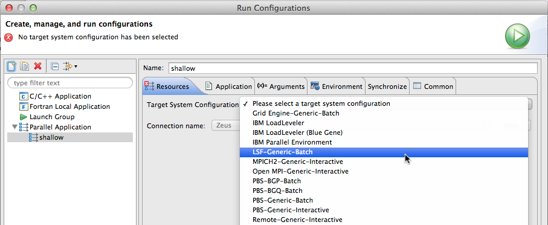
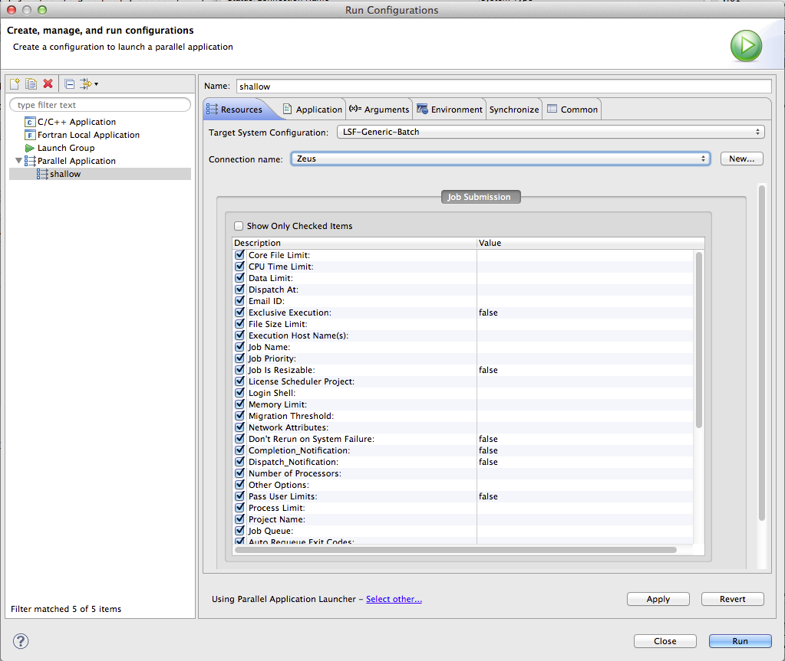

This section describes how to set up a run configuration using IBM Platform Load Sharing Facility (LSF) as a target system configuration to support batch LSF job submission.
This target system configuration assumes the user has set up his login shell to run the profile.lsf shell script or equivalent so that the LSF environment is set up for running LSF commands.

Current implementation allows job submission parameters to be

--- TBD --
Now continue with the run configuration setup for running your parallel application by specifying the Application program on the Application tab, and any other information required.